编码
编码是为段落标明其含义的工作，做法是给段落应用编码。大多数研究都从针对文档提出的问题开始，编码用来帮助回答这些问题。你的全部编码构成项目的编码本；如果研究需要，编码还可以按层级包含子编码。LemmaLoom 会保留每一段已编码的文字，以后你可以汇集每个编码的全部段落，在不同文档之间加以比较（见第 13 章“编码分析”）。
备忘录、链接和书签与编码实例一样，都从阅读器中的选区开始。编码为段落贴上标签，而备忘录、链接和书签分别用来评述段落、把段落相互关联，以及以后再找到它们。如果词典、查询或自定义分析器已经找到了某些段落，可以用自动编码一次为它们全部编码。
本章的示例都基于本指南随附的示例项目“气候辩论”。你可以通过文件 ▸ 导入 ▸ 示例项目添加它（见第 1 章“简介”中的示例项目）。它的编码本有五个代表各个主题的顶层编码，即“成本”“紧迫性”“科学”“情绪”和“责任”。“情绪”下有子编码“恐惧”和“希望”；“不确定性”属于“科学”。“紧迫性”也有两个子编码，即“临界点”和“时间节点”。
概念与基本术语
编码是表示话题或概念的标签，可以应用到文本中的段落上。编码组成树状结构，一个编码可以包含子编码，子编码下面还可以再有子编码。项目中所有编码组成的整棵树称为编码系统。在项目视图栏的编码本视图中，可以看到编码系统、各个编码的描述以及它们的使用次数。
把一个编码应用到一段文本上，就得到一个编码实例。获得编码的这段文本称为编码片段，简称片段。同一段文字可以应用多个编码；这些编码实例可以相互重叠，也可以一个嵌套在另一个里面。
每个编码都有一项格式设置（高亮、下划线或方框），决定阅读器如何显示应用了这个编码的段落；还有一项适用范围，可以把编码限定在一个文档集或单个文档中。
编码集是一组有名称的编码，其中的编码可以取自树中任何位置，供速写空间和查询使用。
编码还可以有自己的属性，例如“恐惧”的强度。这与文档的“立场”或“读者数”是同一类属性，只是每个编码实例各有自己的值。
备忘录是你针对一段文字写下的笔记；与某个编码关联的备忘录就成为已编码备忘录。已编码备忘录算作这个编码的编码实例，继承它的标签，并且为它的各个属性保存自己的值。
建立链接，就是用一条链接把两段文字连在一起；这两段文字可以出自同一个文档，也可以分属两个文档。链接可以附带一条评论，并在两段文字之间注明一种关系（例如“相矛盾”）。
书签是另一种标注，用来标记你以后想再找到的段落。书签有自己的评论字段，也可以设置颜色。
上述所有标注都附着在文本中的段落上。因此，编辑文档时，这些标注会跟随各自的文字移动（见第 5 章“阅读与编辑”中的标注如何跟随编辑）。如果文档有译文，标注还会复制到译文中的对应段落（见本章后文的译文中的编码实例）。
编码界面
编码在阅读器中应用。创建和维护编码，既可以在检查器的编码标签页中进行，也可以在项目视图栏的编码本和编码实例视图中进行。
选区栏和“文档”菜单
在阅读器中选中文字后，阅读器底部附近会出现选区栏。每个按钮都作用于所选内容，并且在文档菜单中都有对应的命令：
| 按钮 | 命令 | 快捷键 | 作用 |
|---|---|---|---|
| 书签（或移除书签） | 文档 ▸ 书签 | ⇧⌘B | 为这段文字加书签，或者移除与之重叠的书签 |
| 编码 | 文档 ▸ 编码 | ⇧⌘C | 打开编码面板 |
| 备忘录 | 文档 ▸ 备忘录 | ⇧⌘M | 为这段文字新建一条备忘录 |
| 链接（或完成链接） | 文档 ▸ 链接 | ⇧⌘L | 从这里开始一个链接，或者结束你已经开始的链接 |
选区栏上还有添加到词典命令，它会把所选文字插入项目词典的某个类别（见第 19 章“词典”中的从文档中添加词条）。选区栏最右端是 ×，点按它会取消选择，与按下 Esc 键的作用相同。关于如何选择词、句子和段落，详见第 5 章“阅读与编辑”中的选择文本。
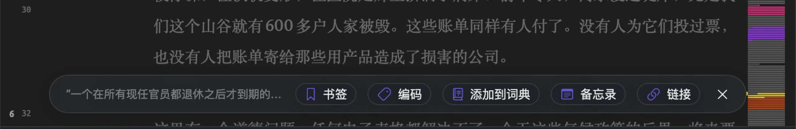

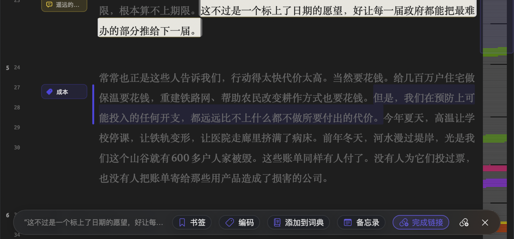
编辑文档文本时，选区栏会隐藏，这些命令也会不可用。
文档菜单中还有三个与编码有关的命令。实境编码（⇧⌘V）用一个以所选词语命名的编码为所选段落编码（见本章的为一段文字编码）。自动编码…（⇧⌘A）自动为某个透镜标注的所有段落编码（见本章的自动为段落编码）。取消链接（⌥⇧⌘L）放弃你正在建立的链接。
检查器的“编码”标签页
检查器的编码标签页（标签形图标，⌥⌘3）作用于当前活动的文档。这个标签页有六个分面：
| 分面 | 显示内容 | 参见 |
|---|---|---|
| 编码 | 编码系统，以及每个编码在本文档中的编码实例数。你在这里创建、编辑和合并编码，也在这里查看编码集。 | “编码”分面 |
| 编码实例 | 本文档的编码实例和备忘录，按阅读顺序排列，并附每个编码实例的属性值 | “编码实例”分面 |
| 链接 | 至少有一端在本文档中的链接 | 沿链接跳转 |
| 编码统计 | 每个编码在文档中的使用次数、覆盖了多少文本，以及哪些编码相互重叠 | 第 13 章“编码分析”中的编码频率与覆盖率 |
| 画像 | 表现文档编码情况的两幅图，即马赛克和编码行 | 第 13 章“编码分析”中的画像 |
| 编码速写 | 一种词汇速写，按周围的编码把一个词的各种用法分开 | 第 12 章“词汇速写”中的编码速写 |
书签则位于文本标签页中（见本章后文的书签）。
项目视图栏
项目视图栏的十个视图中，有四个存放你的编码和标注，即编码本、编码实例、备忘录和链接。从导航栏的项目中打开时，这四个视图都涵盖整个项目；从文档集或标签的标签页中打开时，它们只涵盖相应文档集或标签中的文档。关于这些视图本身及其标签页的详细说明，请参阅第 3 章“项目与文档”中的项目视图栏。
本章介绍编码本、备忘录和链接。编码实例视图列出范围内所有已编码的段落，并可以按属性值筛选这些段落。它与编码统计、编码矩阵和关系一起，在第 13 章“编码分析”中的“编码实例”视图中介绍。
编码
创建编码
编码可以在检查器的编码分面或编码本视图中创建。编码过程本身则是在阅读器中选中段落，再通过编码面板为所选内容应用编码。在分析过程中直接从编码面板当场创建编码的方法，见下文为一段文字编码。一般来说，事先为你的问题创建一批初始编码会有帮助，不过在分析过程中根据材料添加新的编码也没有问题。编码本通常在最初几个文档的编码过程中逐渐成形，编码随时都可以编辑和合并（见本章后文的整理编码）。
要在检查器中创建编码：
- 打开一个文档。
- 在检查器中点按编码标签页，然后点按编码。
- 点按编码系统右侧的 +。
- 在新建编码对话框的名称中输入名称。
- 按照下文编码的字段中的说明设置其他字段，或者保持原样。
- 点按存储。
要创建子编码，请在编码分面中右键点按上级编码，然后选取添加子编码。打开的是同一个对话框，新编码会出现在上级编码下方。
在编码本视图中，点按列表下方的添加编码会创建顶层编码。在同一视图中右键点按上级编码，会出现添加子编码。菜单命令项目 ▸ 添加编码打开新建顶层编码的对话框；项目 ▸ 添加子编码则打开对话框，为编码分面或编码本视图中当前选中的编码新建子编码。
编码有名称之前，存储按钮一直不可用（悬停提示为名称为空）。请务必给每个编码起一个不重复的名称，因为在菜单和表格中很难区分两个同名的编码。
编码的字段
新建编码和编辑编码对话框的字段完全相同。“气候辩论”中的每个主题编码（包括“时间节点”）都有自己的颜色，格式为高亮，适用范围为项目，说明中还有一段描述，写明这个编码指的是什么。例如，“时间节点”的描述是“目标年份、倒计时和截止日期，无论是被要求的、被承诺的还是被批评的。”
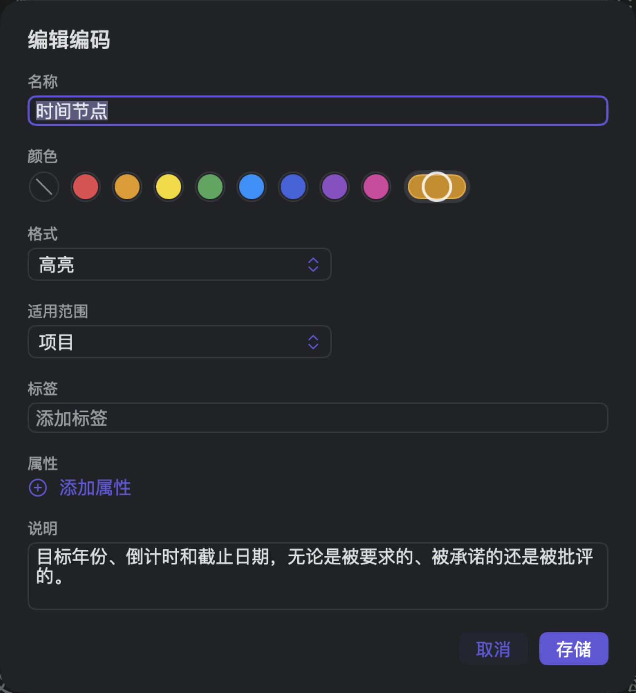
颜色设置决定编码在阅读器中的外观。可以选择无颜色，也可以从红色到粉色的八种颜色中选一种。如果这些都不合适，最右端还有一个颜色池（选择任意颜色）。设为无颜色的编码，在文本中以主题的强调色显示，在页边栏中显示为黄色。为文档编码时，不妨给多个编码选用不同的颜色，以免相互重叠的编码实例在文本和页边栏中混在一起。
格式决定阅读器如何呈现已编码的文字。高亮用编码的颜色填充背景；下划线在文字下方画一条该颜色的横线；方框在文字周围画一个边框。编码实例相互重叠时，混用几种格式有助于把它们区分开，例如方框里的一个高亮短语依然清晰可辨。所选格式适用于这个编码的全部编码实例，包括已编码备忘录。
关于适用范围，以及可以附加到编码上的标签和属性，本章另有专门的小节加以说明，即编码的适用范围、编码上的标签和带属性的编码。
你可以在编码的说明中描述这个编码，解释它涵盖哪些内容，并写下在整个研究过程中一致应用它的准则。这段描述显示在编码本视图中编码名称的下方，也会写入导出的编码本。
编码的适用范围
适用范围菜单为每个编码提供三种适用范围：
- 项目让编码可以在项目的所有文档中使用。新建的编码默认使用这一范围。
- 文档集把编码的使用限定在一个文档集的文档中。请在下方的文档集下拉菜单中选择这个文档集。适用范围也可以是按条件挑选文档的智能文档集（见第 8 章“文档集、分组、标签和属性”中的智能文档集）。适用范围为文档集时，新文档一旦加入这个文档集，LemmaLoom 就会让这个编码在其中可用；文档不再属于这个文档集时，就不再在其中提供这个编码。
- 文档把编码的适用范围定为某一个文档，编码适用于这个文档及其译文。请在下方的文档下拉菜单中选择目标文档。
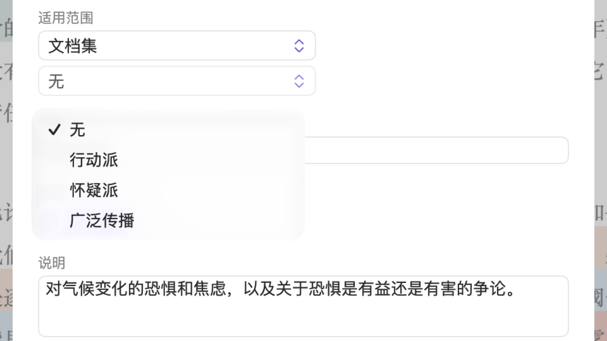
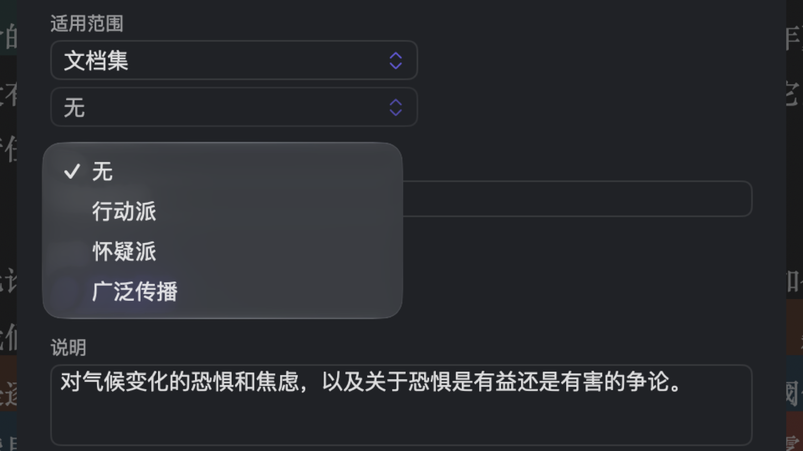
编码面板、编码分面和自动编码对话框按照适用范围，只显示与当前文档相关的编码。适用范围为文档集或文档的编码，需要先在相应的下拉菜单中选定文档集或文档。编码本视图显示所有适用范围的编码。
大多数情况下，适用范围设为项目就足够了。不过，如果某些编码只在部分文档中有意义，例如“行动派”文档集中关于抗议策略的编码，就可以使用文档集或文档范围。LemmaLoom 在转写过程中生成的说话人编码属于文档编码，因为它们只与单个文档（录音的转写稿）有关。例如，在“气候辩论”项目中，“说话人”（子编码为“主持人”“活动人士”和“怀疑论者”）是“电台辩论”的文档编码，所以你为“时间不多了”编码时，编码面板中不会出现它（见第 4 章“导入资料”中的说话人）。
以后缩小编码的适用范围时，此前的编码实例在文本和各项统计中都保持不变。在缩小后的范围以外的文档中，这些编码实例只能通过编码实例分面或项目视图栏的编码实例视图删除（见本章后文的移除一段文字上的编码）。如果删除了编码所属的文档集，要再次应用这个编码，需要先为它指定新的适用范围。删除文档时，它的文档编码会一并删除。删除译文时，译文的文档编码会转给原文。
关于文档集或项目范围的词汇速写如何处理文档编码，请参阅第 12 章“词汇速写”中的文档编码。
子编码和编码树
在编码分面和编码本视图中，树的每一层编码都按名称顺序排列，子编码缩进显示在上级编码下方。
如果层级结构对你的研究有帮助，就使用子编码。这样可以按一个宽泛主题的不同表现形式把它细分。例如，在示例项目“气候辩论”中，“紧迫性”分为“时间节点”和“临界点”，前者指目标年份和截止日期，后者指据称一旦越过、损害就无法逆转的阈值。如果没有这种自然的层级，简单的平铺列表就够用了。
上级编码本身也是一个普通的编码。如果一段文字属于这个宽泛的主题，却不属于子编码所涵盖的任何一种表现形式，就用上级编码为它编码。在“一位市长的承诺”中，“我们没有慢慢起步的余地”被编码为“紧迫性”，因为它既不属于“临界点”，也不属于“时间节点”。上级编码旁边的数字只统计直接用它编码的段落。
要移动编码，请在编码分面或编码本视图中把它拖到新的上级编码上，或者右键点按它并选取移到。移到子菜单以树的形式列出编码，但不包括被移动的编码本身及其子编码。列表最上方的顶层会让所选编码脱离上级编码。项目 ▸ 移到对当前选中的编码起同样的作用。编码会保留它的编码实例，它的子编码也随之一起移动。
应用编码
为一段文字编码
在“时间不多了”的第四段中，三个目标“2050年实现净零。本十年末告别煤炭。2030年排放减半。”被编码为“时间节点”。插图中选中的段落出自“农民不是敌人”，它同时被编码为“成本”和“责任”，因为它既谈到转型的账由谁来付，也谈到应该由谁行动。所以编码面板在这两个编码旁边都显示勾号。
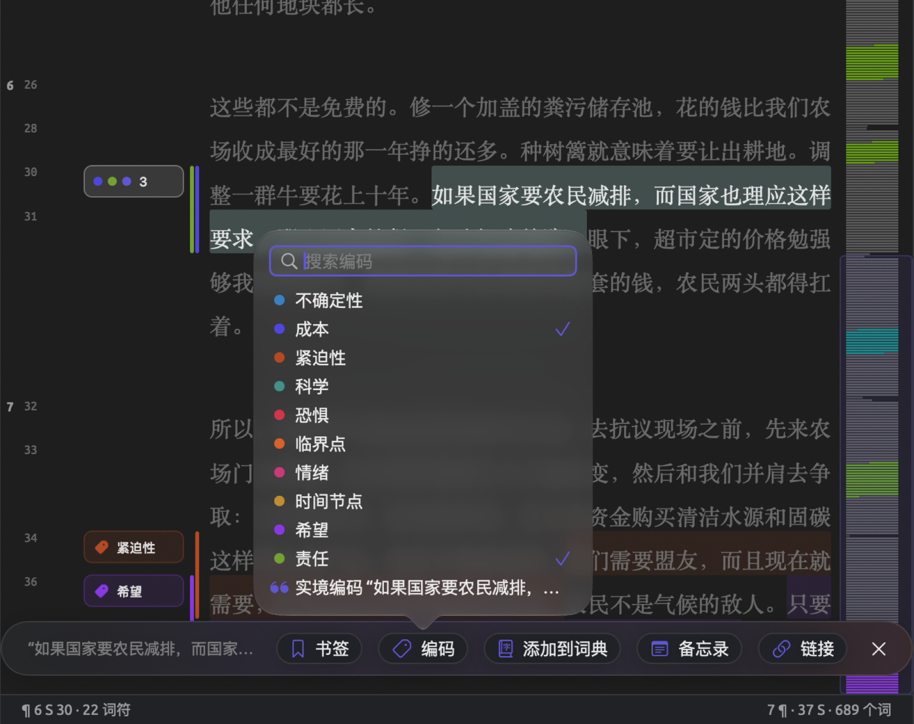
要为一段文字编码：
- 选中一段文字、点按页边栏中的段落编号或句子编号，或者点按单个词。
- 点按选区栏中的编码，或者按下 ⇧⌘C。
- 在编码面板中点按编码。如果这个编码有属性，会先出现一个对话框，询问属性的值（见本章后文的带属性的编码）。
能选中什么取决于文档。单个词和句子编号只有在文档建立索引之后才能选择。选中一段文字则适用于所有文档，包括用英语、德语和中文以外的语言写成的文档。
编码面板按名称顺序列出当前文档中可以使用的所有编码，每一项都显示编码名称及其颜色。由于列表是平铺的而不是分层的，“时间节点”排在“情绪”之后、“希望”之前。面板打开时，焦点位于搜索编码输入框中，输入名称的一部分即可缩短列表，结果中的第一项会高亮显示。按下 Return 键，高亮的编码就会应用到这段文字上；↑ 和 ↓ 键可以移动高亮，在输入之前也可以。因此，只要输入几个字再按 Return 键，就能完全用键盘为一段文字编码。
为一段文字应用编码后，编码面板仍然保持打开，你可以立即为同一段文字应用更多编码。按下 Esc 键或点按面板以外的任何地方，即可关闭面板。
如果某个可用的编码已经覆盖了所选段落的一部分，它的名称旁边就会显示勾号。点按带勾号的编码，或者在它高亮时按下 Return 键，就会从这段文字上移除这个编码（见下文移除一段文字上的编码）。要改变一个编码实例覆盖的范围，需要先移除现有的编码实例，再重新编码。要给现有的编码实例换一个编码，可以使用编码实例分面中的更改编码（见下文“编码实例”分面）。
分析过程中想到的编码，可以在阅读文档时通过编码面板直接加进编码本。如果列表中没有哪个编码的名称与你输入的相同，列表底部会出现添加编码“…”，它会创建一个以此命名的编码并应用它。实境编码“…”始终排在列表最后；它根据文档中当前选中的文字新建一个实境编码，用所选文字为编码命名，并应用这个编码。例如，在“时间不多了”中选中“标上了日期的愿望”，面板就会提供实境编码“标上了日期的愿望”。文档 ▸ 实境编码（⇧⌘V）不打开面板也能完成同样的操作。名称超过 60 个字符时会被截短，并以省略号结尾。如果本文档中可以使用的某个编码已经有这个名称（不区分大小写），LemmaLoom 就会使用这个编码，而不会新建一个。
通过面板中的添加编码或实境编码功能创建的编码，位于编码本层级的顶层，颜色为无颜色，格式为高亮，适用范围为项目。下次检查编码本时，不妨给这些编码选一种颜色，并把它们放到树中合适的位置（见本章后文的整理编码）。在最初几轮编码中，实境编码让编码更贴近材料原本的措辞，因而可能很有用；等编码稳定下来，再给它们重命名或把它们合并。编辑 ▸ 撤销应用编码（⌘Z）会同时移除这个编码实例和新编码。
编码的显示方式
编码透镜启用时（文档打开时默认启用），每个编码实例都以其编码的颜色和格式标示出来。页边栏中，每段已编码文字的旁边有一条与编码同色的细竖条，这段文字开头处的旁边还有一个显示编码名称的小标注。相互重叠的编码实例并排显示，最多三条竖条；更多的编码实例共用第三条竖条。将鼠标指针悬停在竖条上，对应的段落会高亮显示；点按竖条或编码标注，即可选中这段文字。
如果页边栏中有几个标注几乎处在同一高度，LemmaLoom 只为它们显示一个标注，就像上图中所选段落旁边的那个。编码实例、备忘录、书签和链接端点都以同样的方式合并；每个合并后的标注为前三项各显示一个彩色圆点，并标出其中的项数。将鼠标指针悬停在合并标注上或点按它，会列出其中的各项，点按一项即可选中它的段落；如果这一项是链接端点，点按它会跳到链接的另一端。
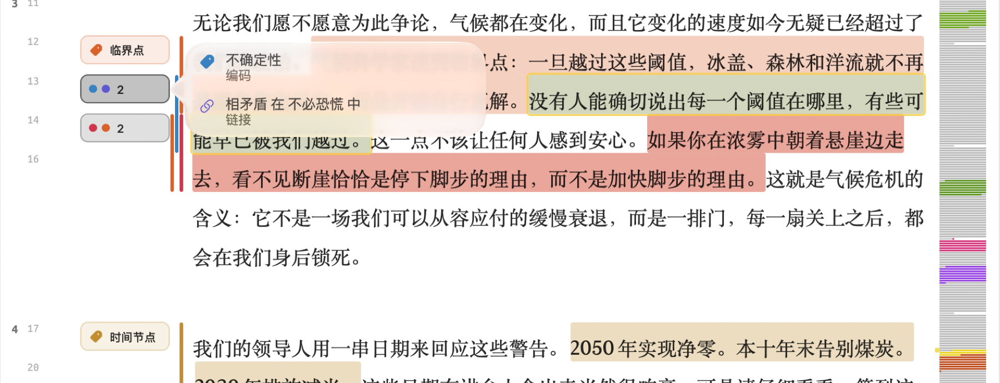
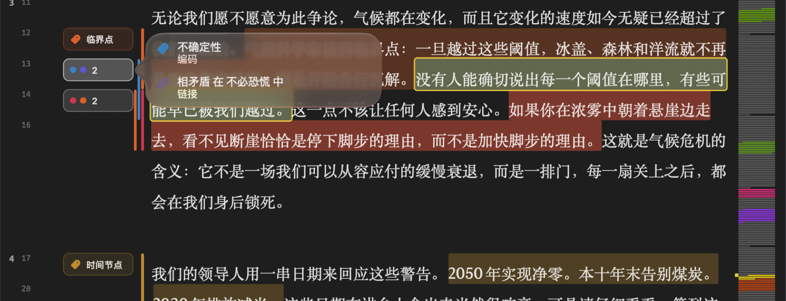
停用编码透镜，会一次性移除编码实例的所有视觉标记（见第 6 章“透镜”中的编码与书签）。
移除一段文字上的编码
- 选中这段文字。点按页边栏中它的竖条或标注，可以正好选中已编码的文字。
- 打开编码面板（⇧⌘C）。
- 点按带勾号的编码。
点按这个编码，会删除这个编码中与所选内容重叠的所有编码实例，即使这些编码实例超出了所选范围也是如此。如果同一个编码的几个编码实例挨得很近，选择时请多加小心。
如果只想移除某一个编码实例，而不是所有重叠的编码实例，请使用编码实例分面。点按这个编码实例，再点按其文字下方的删除；或者右键点按它，从菜单中选取删除编码实例。如果你正在查看项目视图栏的编码实例视图，也可以右键点按片段，然后选取删除编码实例。
删除一个编码实例，也会删除它的属性值，以及它在文档译文中的副本。
“编码实例”分面
编码实例分面按阅读顺序显示当前文档中的所有编码实例。顶部的切换控件在编码实例和备忘录之间切换，两者的标签后面都在括号中标出数量，例如“时间不多了”的编码实例 (13)。关于备忘录，本章后文的阅读、编辑和删除备忘录有更详细的说明。
每个编码实例占一行，显示编码的颜色和名称、位置以及文字的第一行。第 4 段第 2 句的位置写作 ¶4·2。在没有句子的文档中（例如尚未建立索引的文档），只显示段落，如 ¶4。点按一个编码实例，LemmaLoom 会把阅读器滚动到这段已编码的文字。这一行同时展开，显示最多四行文字、为它设置的属性值以及删除按钮。再点按一次即可收起。右键点按则可以选取跳转到来源、更改编码或删除编码实例。
更改编码以树的形式分层列出可以指定的编码。选取一个之后，这个编码实例及其在译文中的副本都会改用所选编码。如果新编码有名称和类型都相同的属性，编码实例会保留这些属性的值；其他属性的值则会丢失。用编辑 ▸ 撤销更改编码（⌘Z）可以撤销编码的更改，这些值也会一起恢复。项目视图栏的编码实例视图中，每个片段的快捷菜单里也有相同的菜单项。
编码实例列表上方还有三个控件：
- 搜索按编码名称或文字搜索，以缩短列表。
- 漏斗按钮按编码筛选把列表限定为所选编码的编码实例。选取所有编码即可恢复显示全部编码实例。
- 导出可以把当前显示的所有编码实例导出为 CSV 文件，各列为编码、位置、开始、结束和文本。其中“开始”和“结束”以从文档开头算起的字符数表示这段文字所在的位置。
带属性的编码
有时，编码需要比简单的是或否更细致的区分。例如，在一项关于气候类文章中恐惧情绪的研究中，你可能想为每个恐惧的编码实例记下强度。这里的属性就是“强度”，选项可以是“低”“中”或“高”，“恐惧”的每个编码实例各取其中之一。一般来说，如果某种性质在每段已编码的文字中都存在（在这个例子中，就是情绪有多强烈），就用属性。如果一个编码下还有另一个层次，值得在编码面板和编码表格中作为独立的条目出现，就用子编码。
要为编码添加属性：
- 打开编码的对话框，例如在编码分面中连按这个编码。
- 在属性下点按添加属性。
- 输入属性名称。输入时会提示项目中已有的属性名称；选择其中一个，也会一并沿用它的类型和选项。
- 在名称旁边显示文本的菜单中选择类型，即文本、整数、小数、布尔值（真或假）、日期或选择器（从一组选项中选一个）。
- 如果选择了选择器，请在出现的各行中输入各个选项，每行一个。
- 点按存储。
添加属性上方列出编码已有的属性，每个都标出类型。铅笔按钮（编辑）会打开编辑属性对话框，你可以在其中编辑属性的名称、选项和描述；如果属性中已记录的值允许，还可以更改类型。这个对话框的存储按钮会立即应用更改，无需在编码对话框中再次确认；即使你随后取消了编码对话框，这些更改也会保留。减号按钮（移除属性）会在你存储编码时删除这个属性及其全部值。关于上述各种类型的详细说明，请参阅第 8 章“文档集、分组、标签和属性”中的属性类型。
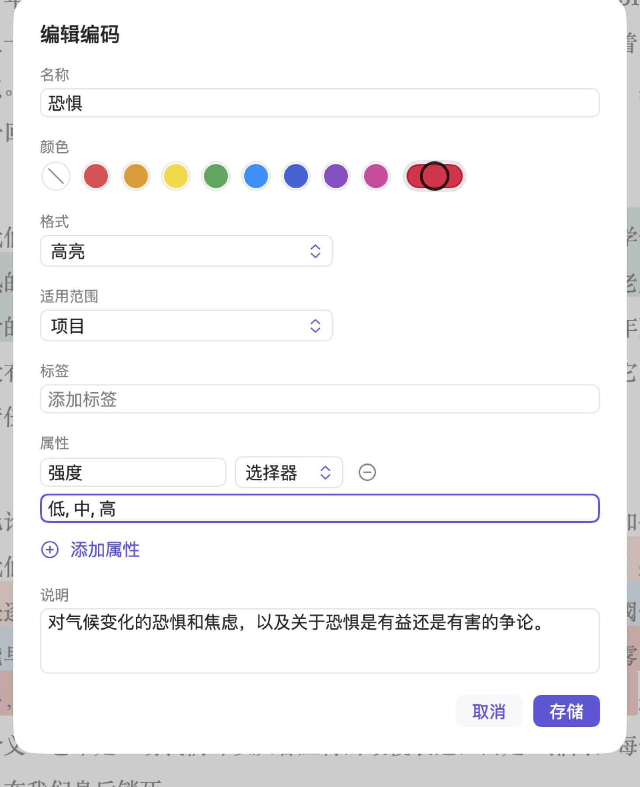
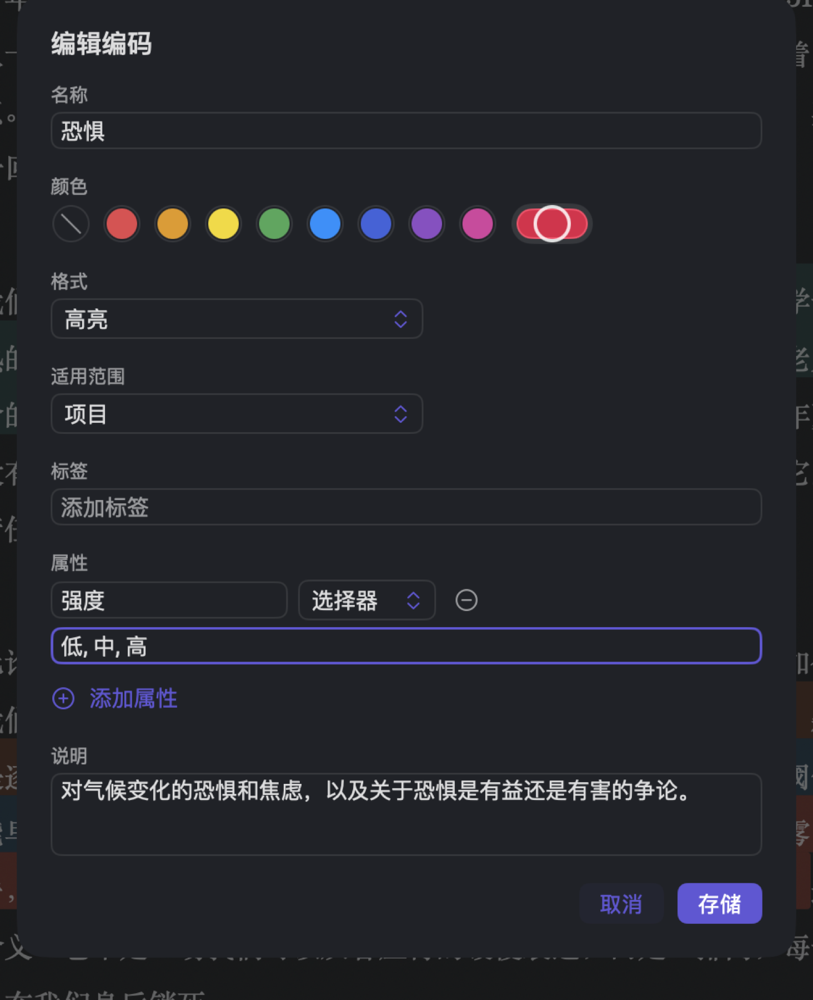
为文字应用带属性的编码时，LemmaLoom 会先打开一个小对话框，请你填写相应的属性。填好需要的值，然后点按应用编码。
应用带属性的编码之后，要修改这些值，请在编码实例分面中点按这个编码实例。修改任何一个值控件后，更改会立即保存。
在项目视图栏的编码实例视图中，所选片段的属性值旁边有可以直接修改它们的控件。在这个视图中，还可以按属性值筛选片段。编码统计的属性分布部分（分面和项目视图栏中的视图都有）按属性值细分每个编码的编码实例，详见第 13 章“编码分析”中的属性分布。查询构建器可以按属性值查询编码实例（见第 15 章“构建查询”）。
归属于带属性编码的已编码备忘录，有自己的一套属性值（见本章后文的已编码备忘录）。
译文中的编码实例
通过翻译，你可以为文档创建不同语言的版本。“时间不多了 (英语)”就是一份英语译文，在导航栏中列在原文下方。在“时间不多了”中为任何一段文字编码，译文中的对应段落也会得到同样的编码，反之亦然。在任一文档中创建的备忘录、链接和书签也都会复制过去。所有副本始终相互关联。
副本与段落贴合得有多准确，取决于两份文本的句子如何对齐（详见第 9 章“译文与分屏浏览”中的副本存放在哪里）。删除或编辑其中一个副本，这个编码实例的所有副本都会随之变化。编码实例和它的副本也共用相同的属性值。
对文档集或项目进行的分析，默认只针对原文文档。因此，在分析结果中，一个编码实例和它的副本只计一次（见第 9 章“译文与分屏浏览”中的分析中的译文）。
整理编码
编辑编码
要打开编辑编码对话框：
- 在编码分面中连按编码，即可直接打开；右键点按编码并选取编辑也可以打开。
- 同样，在编码本视图中，连按编码、点按详细信息中编码名称旁边的编辑，或者右键点按编码并选取编辑，都可以打开它。
在这两个地方，点按一下即可选中编码，选中后按下 Return 键会打开编辑编码对话框。完成所需的更改后点按存储，所有更改都会立即反映在当前打开的文档中。
“编码”分面
编码分面在编码系统标题下，列出适用范围包含当前文档的编码。在这个例子中，当前文档（“时间不多了”）可以使用的编码，是“气候辩论”中除“说话人”及其子编码以外的全部编码，因为“说话人”及其子编码属于“电台辩论”。“成本”和“不确定性”各有一条自己的备忘录，因此显示便笺图标；编码集“论点”显示在编码系统下方。
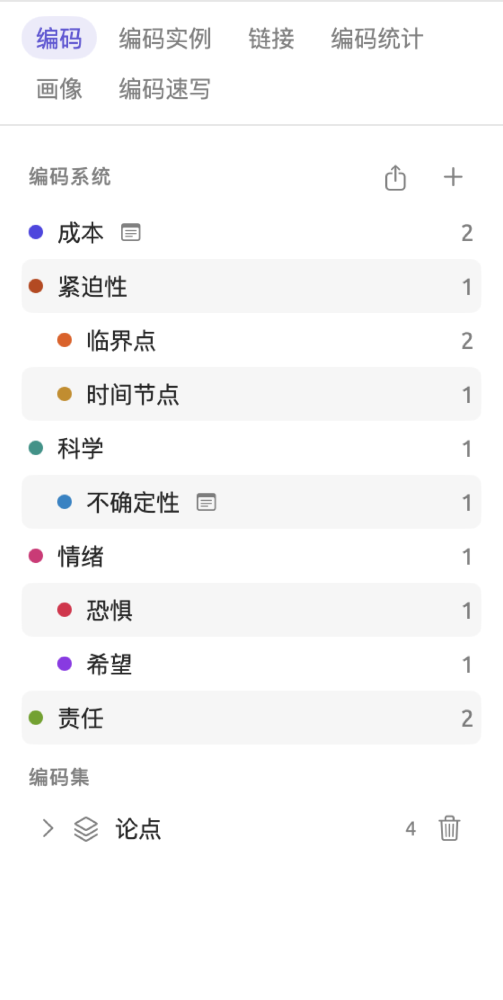
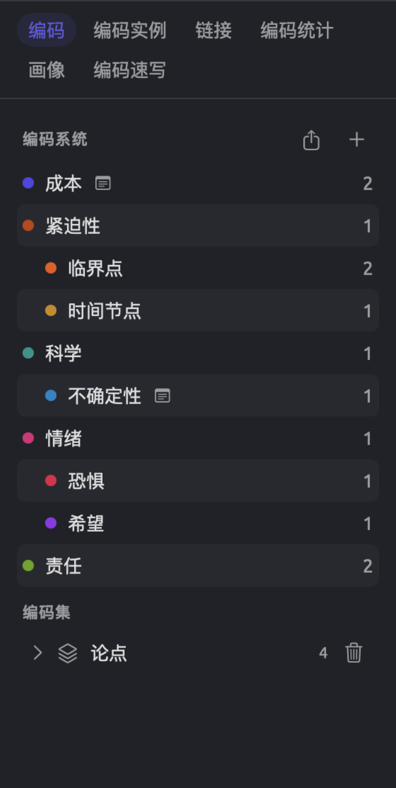
每一行从左到右依次显示：
- 编码的颜色和名称；
- 便笺图标，表示有一条专门附在这个编码上的备忘录，只有导入的项目才可能有这种备忘录（见本章后文的关于文档、编码和项目的备忘录）；
- 最右侧是这个编码在本文档中的使用次数（包括与这个编码相关的已编码备忘录）。点按这个数字（显示编码实例），可以在编码实例分面中查看编码实例列表。
标题行有两个按钮。导出把整个列表导出为 CSV 文件，+ 用来添加新编码。右键点按编码，会出现编辑、添加子编码、显示编码实例、移到、合并到、添加到编码集和删除等选项；项目菜单为所选编码提供添加子编码、移到、合并到、添加到编码集和删除编码。
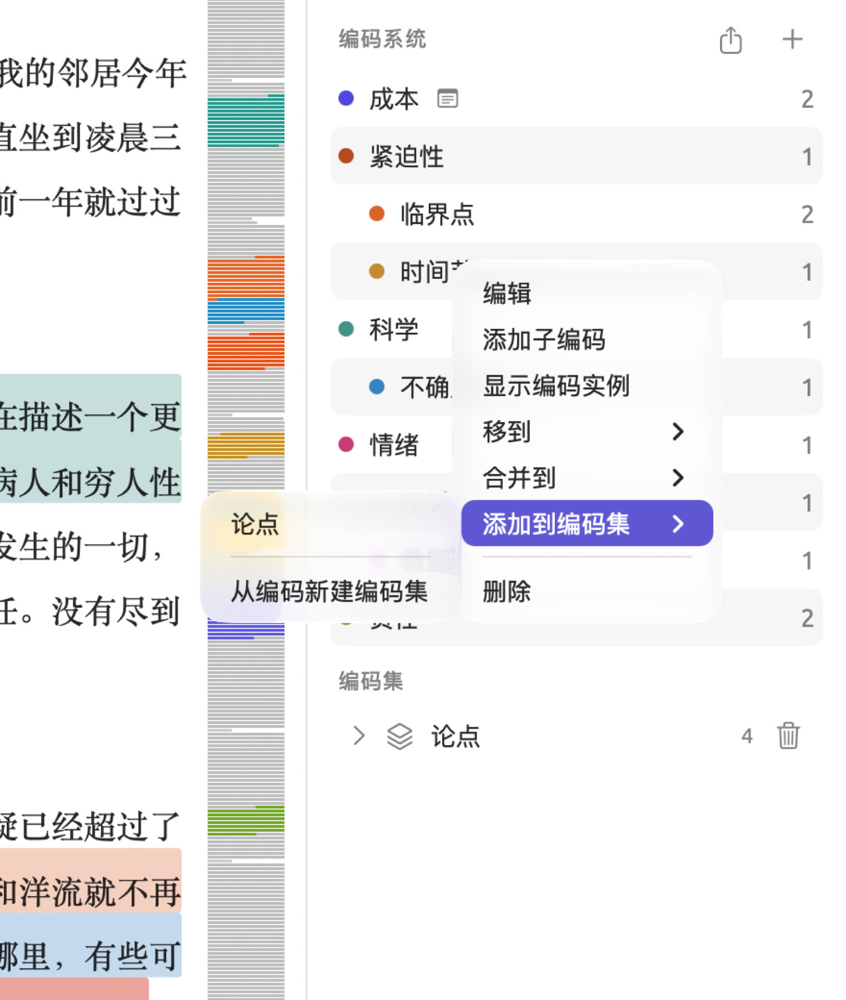
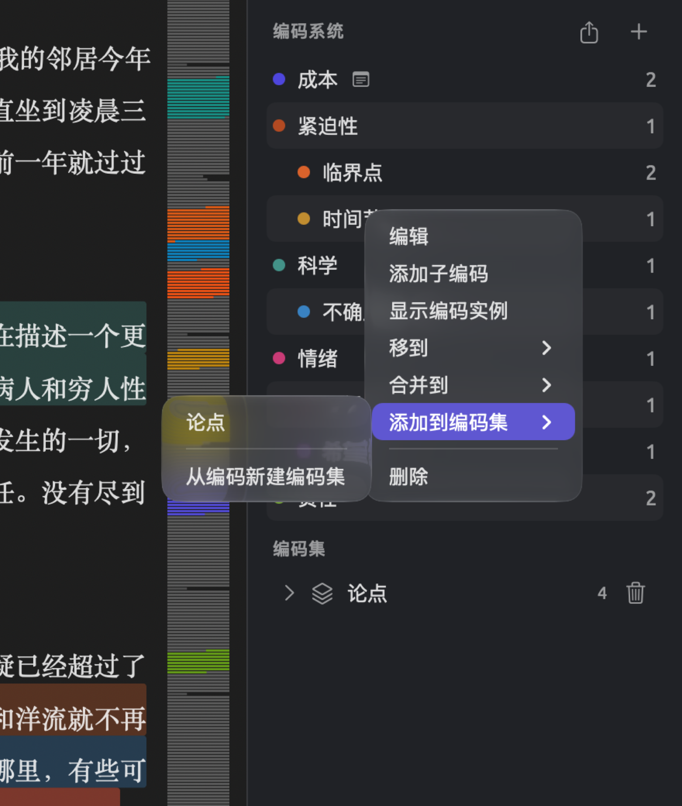
如果项目中有编码集，它们会显示在编码系统下方一个名为编码集的单独部分中（见下文编码集）。
编码上的标签
标签是简短的名称，可以加在项目、文档、编码、备忘录和链接上。整个 LemmaLoom 共用一份标签列表，所以像“待跟进”这样的标签，无论用在哪里，含义都相同（见第 8 章“文档集、分组、标签和属性”中的标签）。与在其他地方一样，编码上的标签用于整理，而不是表达含义。例如，你可以用标签标出还需要进一步检查的编码。
为编码加标签要在编码的对话框中进行。在标签字段（占位文字为添加标签）中输入标签，然后按下 Return 键。输入英文逗号也会结束一个标签。输入时会显示 LemmaLoom 中任何地方已有的标签作为建议。点按标签旁边的按钮（×）移除这个标签。
在编码本视图中，只要至少有一个编码带有标签，就可以按标签筛选编码。列表下方会出现按标签筛选按钮。选择一个标签后，列表只显示带有这个标签的编码。这些编码的上级编码仍然可见，因此树的结构保持不变。所选标签显示在列表上方；点按它的 × 即可重新显示全部编码。
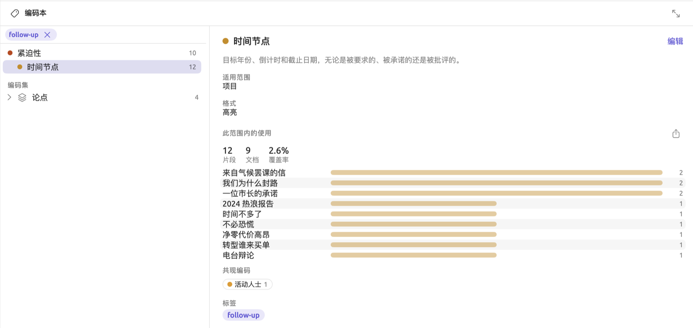
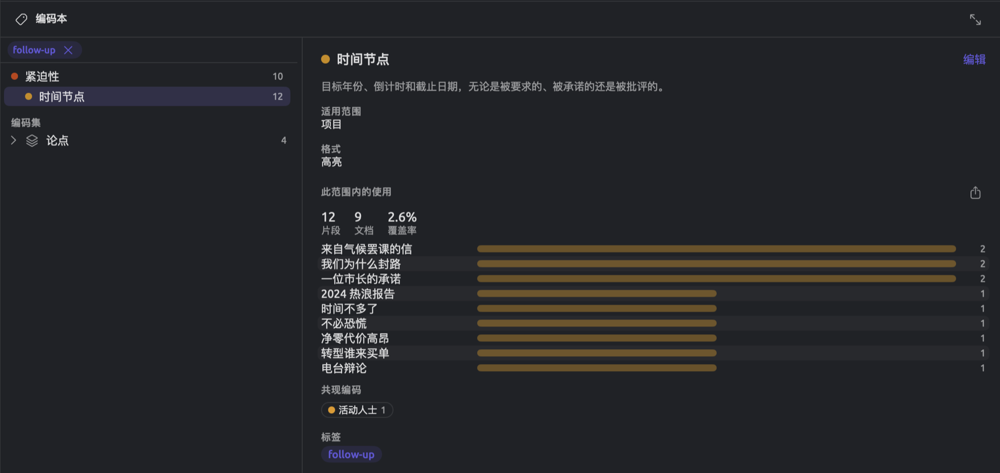
归属于某个编码的备忘录会自动继承这个编码的标签。在查询中，可以用标签规则，按编码上的标签查找特定的编码（见第 15 章“构建查询”）。
编码集
编码集可以把编码树中任何位置的多个编码汇集在一起，供比较或查询使用。例如，你可以为某个研究问题的相关编码建一个编码集。在示例项目“气候辩论”中，编码集“论点”包含来自树中不同位置的“成本”“责任”“科学”和“不确定性”。
要创建编码集：
- 在编码分面或编码本视图中右键点按一个编码。
- 选取添加到编码集 ▸ 从编码新建编码集。
LemmaLoom 随即创建一个包含这个编码的编码集，并选中它的默认名称新建编码集，你可以直接输入自己的名称，然后按下 Return 键。请根据其中编码的共同点为编码集命名，例如它们针对的研究问题。以后要重命名编码集，请在编码集部分右键点按它，然后选取重命名。要把另一个编码添加到某个编码集，请先右键点按这个编码，然后选取添加到编码集，再从菜单中选择目标编码集。
编码分面和编码本视图中，编码树下方的编码集部分列出现有的每个编码集，并显示其中的编码数量。点按一个编码集即可展开或收起。要查看某个编码属于哪些编码集，请右键点按这个编码，打开添加到编码集，它所属的编码集会显示为不可用。要删除编码集，请右键点按它并选取删除，或者在编码分面中点按它旁边的废纸篓按钮。
要把编码从编码集中移出，请展开这个编码集，然后右键点按目标编码，选取从编码集中移除。
在速写空间中，编码集可以提供用于比较编码的各列（见第 14 章“速写空间”中的编码的分组）。编码集也可以作为查询列出的条目，即编码集；针对编码的编码集设置规则，可以找出某个编码集包含的编码（见第 15 章“构建查询”）。
合并编码
合并两个编码，就是把一个编码并入另一个编码。用第一个编码应用的所有编码实例都转到第二个编码名下，第一个编码则被删除。当你发现两个编码其实是一个意思，或者想把子编码并回上级编码时，就可以合并。如果只想在层级中移动编码而不合并，请使用移到（见本章前文的子编码和编码树）。你可以先用较细的编码，以后根据需要再合并。
- 在编码分面或编码本视图中，右键点按要合并掉的编码；或者选中它，然后打开项目 ▸ 合并到。
- 选取合并到，然后选取要保留的编码。菜单中不包括这个编码本身及其子编码。在编码分面中，菜单只列出在打开的文档中可以使用的编码；在编码本视图中，菜单列出项目的所有编码。
- 对话框会写明两个编码的名称，并说明将有多少个编码片段和子编码移过去。点按合并。
在“气候辩论”项目的编码本中，“时间节点”有 12 个片段，“紧迫性”有 10 个片段。选择把“时间节点”合并到“紧迫性”时，会出现对话框，显示将“时间节点”合并到“紧迫性”？，并告诉你有 13 个编码片段将移到“紧迫性”，而“时间节点”会被整个删除。确认之后，编码本中“紧迫性”的片段数为 10 + 12 = 22。
这个对话框中的所有数字，以及删除编码时对话框中的数字，统计的都是项目中的全部编码实例，包括“时间不多了 (英语)”等译文中的副本。由于编码本视图不计译文中的副本，对于在“时间不多了”中用过的编码，你会发现对话框中的数字比片段大。“时间节点”在“时间不多了”中只有一个编码实例，所以算上它的副本，对话框中的总数是 12 + 1 = 13。
移过去的内容包括：
- 被合并编码的所有编码实例和已编码备忘录。
- 它的子编码，它们成为保留编码的子编码。
- 关于被合并编码本身的备忘录。
- 它在编码集中的位置；如果两个编码同时出现在某个编码集中，合并后保留的编码在其中只出现一次。
- 属性及其值；如果保留编码已有名称和类型都相同的属性，两者会合并为一个。
所有引用被合并编码的已存储查询，此后会自动改为引用保留的编码。被合并编码的名称、颜色、格式、适用范围、标签和描述都会删除，只留下保留的编码。
如果合并前一段文字在完全相同的范围内同时带有这两个编码，合并后这段文字就带有保留编码的两个编码实例。这两个编码实例在编码实例分面中分别列出，并且都计入这个编码在项目中的编码实例总数。如果这会影响你的统计，请移除其中一个编码实例（见本章前文的移除一段文字上的编码）。
删除编码
- 右键点按编码，然后选取删除（在编码分面中）或删除编码（在编码本视图中）；或者选中编码，然后选取项目 ▸ 删除编码。
- 对话框会说明有多少内容将随之删除，例如这将移除 2 个子编码和 31 个编码片段。点按删除。
删除一个编码时，删除会逐级波及它下面的所有子编码，移除上级编码和各级子编码的所有编码实例，以及与这些编码实例相关的属性值。例如，删除编码“紧迫性”会一共删掉 31 个编码实例，其中“紧迫性”11 个、“时间节点”13 个、“临界点”7 个，每个数字都包括“时间不多了 (英语)”中的副本。删除编码时，归属于它的备忘录会变成普通备忘录。
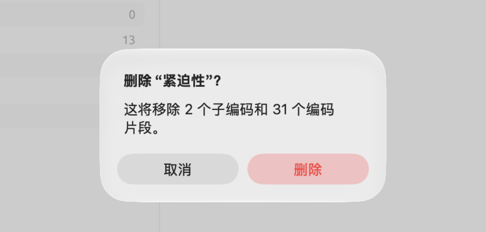
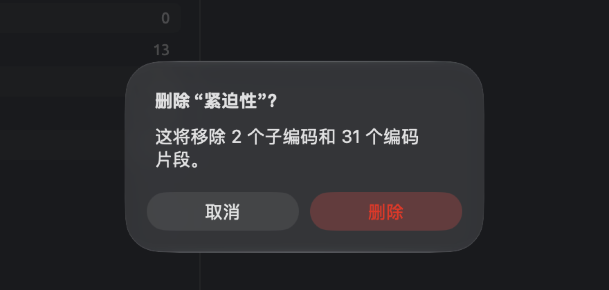
编辑 ▸ 撤销删除编码（⌘Z）可以恢复因删除编码而丢失的一切。
“编码本”视图
编码本视图显示当前项目的完整编码系统，以及每个编码的描述、统计数字和标签。你可以从导航栏的项目下打开它，也可以在任何文档集或标签的标签页中点按编码本。文档集或标签的标签页打开时，显示的就是编码本。
插图中，“气候辩论”的编码本里选中了“成本”。它在 10 个文档中共有 19 个片段，其中“净零代价高昂”最多（5 个）。这个编码覆盖了项目全部文本的 3.4%。它的片段与编码“责任”重叠了 5 次。
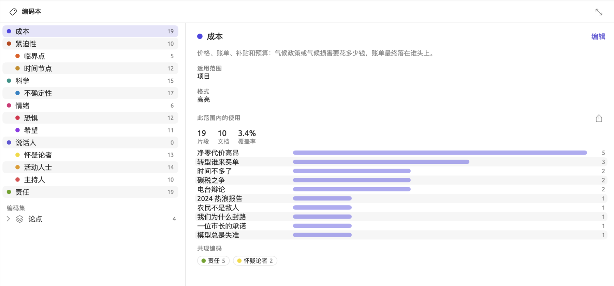
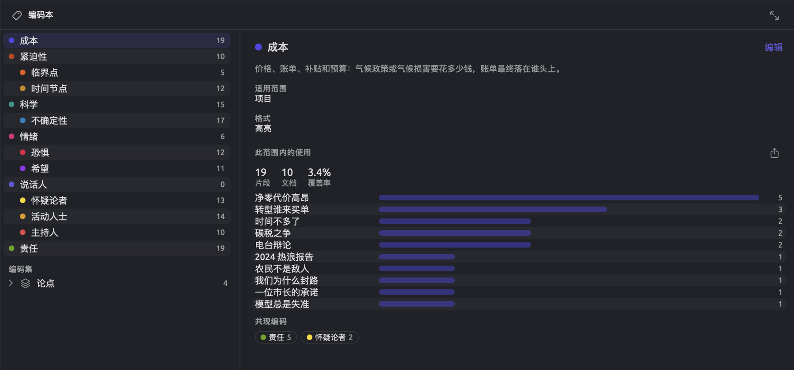
左侧是编码树，下方是项目中的编码集列表（见本章前文的编码集）。树中每个编码旁边的数字，表示它在当前范围内的编码片段数。编码树下方是添加编码、标签筛选按钮（见本章前文的编码上的标签）和导出。拖移编码树和详细信息之间的分隔线，可以给其中一方更多空间。
选中一个编码，右侧会显示它的详细信息，包括：
- 它的颜色、名称和编辑按钮；
- 取自说明的描述；
- 适用范围和格式设置；
- 此范围内的使用，包括三个数字（片段、文档和覆盖率百分比），以及含有这个编码的每个文档各一个条形，按片段数从多到少排列；
- 共现编码，列出片段与这个编码的片段相交的所有其他编码，以及相交的次数；
- 标签，即这个编码带有的所有标签。
点按此范围内的使用下的任意条形，就会在阅读器中打开对应的文档，并定位到这个编码的第一个片段。此范围内的使用标题右侧有一个导出按钮，可以把这些条形存储为图片（PNG 或 PDF），或者把数字存储为 CSV 文件。
连按片段，或者右键点按它并选取显示编码实例，会在编码实例视图中打开这个编码的片段。共现编码下列出的编码也是如此，它会列出这个编码中与那个编码相交的片段。如有需要，还可以用编码实例视图中筛选条件旁边的包括子编码选项加入子编码的片段（见第 13 章“编码分析”中的“编码实例”视图）。
这些数字只统计原文文档中的编码实例（也就是说，“时间不多了”中的一个编码实例和它在“时间不多了 (英语)”中的副本只计一次）。上级编码的数字只统计上级编码自己的编码实例，已编码备忘录不计在内。
解读这些数字
片段是这个编码在范围内各文档中的编码实例数。文档是至少含有这个编码的一个片段的文档总数。
覆盖率是这个编码的片段所覆盖的字符数占范围内各文档字符总数的比例。这个统计量可以说明，某个编码只是零星覆盖几行文字，还是覆盖了文档中的大段内容。
公式中的 Coverage 即覆盖率。 是这个编码各片段的字符总数。如果同一个编码的片段在同一文档中相互重叠，重叠的字符只计一次。 是范围内所有文档的字符总数，不论是否已编码。空格和换行符也计算在内。
在“怀疑派”文档集的编码本中，“成本”在 5 个文档中的 3 个里共有 9 个片段。假设这个范围内的文档共有 6,000 个字符，这 9 个片段一共占其中的 330 个。这两个数字是假设的，但它们的比例与实际情况相当接近。视图显示片段 9、文档 3，以及：
“不必恐慌”和“科学从无定论”两个文档没有“成本”的片段，但它们的字符仍计入 。在项目的编码本中， 包括所有行动派文本、“2024 热浪报告”以及其余所有文档，而 包括所有这些文档中“成本”的片段。假设项目共有 18,000 个字符，“成本”的片段占其中的 612 个，即上面提到的 330 个，加上项目中其他文档里的 282 个。于是，尽管没有任何编码实例发生变化，项目的编码本得出的却是 ，即 3.4%。比较几个编码的覆盖率时，请在同一个范围内比较，这时所有相关编码的 都相同；同时还要结合片段来看。
编码统计分面为单个文档提供同样的度量，详见第 13 章“编码分析”中的编码频率与覆盖率。
共现编码统计的是相互重叠的片段对的数量。一个“成本”片段每与另一个编码的一个片段重叠一次，那个编码在共现编码中的计数就加 1；如果同一段“成本”文字与两个不同的“责任”片段重叠，“责任”的计数就加 2。这里的数字高，也可能只是说明两个编码都用得多，因为一个有许多长片段的编码，单凭偶然也会与其他编码重叠。在“气候辩论”项目中，“成本”和“责任”是用得最多的两个编码，各有 19 个片段；“成本”的共现编码中，“责任”的数字是 5。要定量衡量两个编码在同一文档中同时出现的倾向，请参阅编码统计分面中的共现部分，详见第 13 章“编码分析”中的文档中的共现。
导出编码本
树下方的导出把树中显示的编码导出为 CSV 文件，其中有六个字段（编码、路径、层级、数量、描述和颜色）。“路径”字段显示编码在树的层级中相对于其他编码的位置。例如，“紧迫性”下的编码“时间节点”，路径显示为 紧迫性 / 时间节点。“层级”显示编码位于层级中的第几层（顶层编码为 1，子编码为 2，依此类推）。“数量”显示范围内的编码片段总数。设置了标签筛选时，只导出视图中显示的编码。如果要以 REFI-QDA 格式导出编码本，请参阅第 22 章“交换与导出”中的导出编码本。
编码本窗口
要让编码本与阅读器并排显示，请先从导航栏的项目中打开编码本视图，然后点按视图上方横栏最右端的在窗口中打开（两个斜向箭头）。你也可以选取窗口 ▸ 编码本，或者在导航栏中右键点按项目，然后选取编码本，来打开编码本窗口。编码本窗口涵盖整个项目。窗口顶部有一排按钮，项目视图栏的每个视图各对应一个。项目的编码实例、备忘录和链接视图也有同样的在窗口中打开按钮，点按后会在窗口中打开相应的视图。
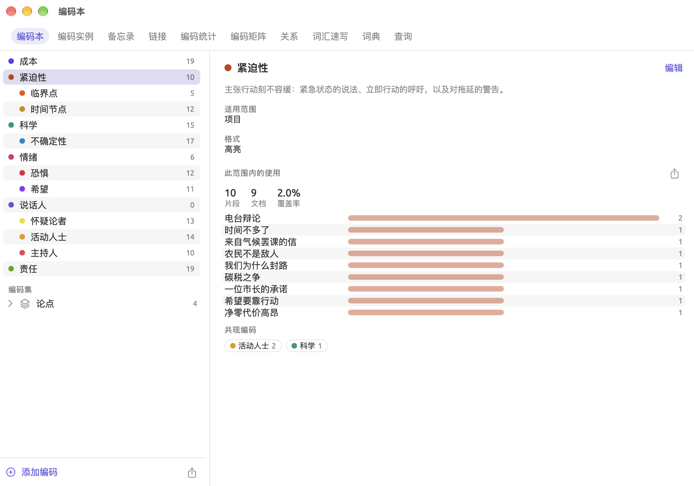
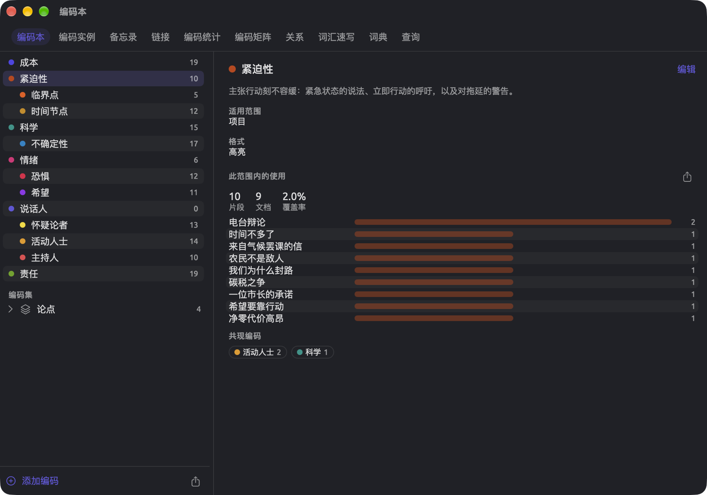
备忘录
备忘录记录你对某段文字意义的思考，例如段落之间的比较、你的感想，以及编码过程中产生的各种问题。通常，你会一边为文档编码一边撰写备忘录，以后在得出结论时再回头看它们。在示例项目“气候辩论”中，四个文档里有针对若干段落的备忘录。例如，在文档“时间不多了”中，针对“这不过是一个标上了日期的愿望，好让每一届政府都能把最难办的部分推给下一届。”这段文字的备忘录指出，遥远的目标被解读为推诿，而不是雄心。
撰写备忘录
- 选中备忘录所针对的文字。
- 点按选区栏中的备忘录，或者按下 ⇧⌘M。
- 新建备忘录对话框的顶部显示所选文字。在备忘录中输入你的笔记。
- 要为备忘录加标签，请在标签中输入标签。要让它成为已编码备忘录，请在编码中选择一个编码（见下文已编码备忘录）。
- 点按存储。
备忘录中写入内容之前，存储按钮一直不可用（悬停提示为备忘录为空）。
已编码备忘录
在编码菜单中选择了编码的备忘录，就成为已编码备忘录。如果你的笔记针对的是所选编码，而不是所选段落本身，例如说明某段文字为什么符合你正在应用的编码，就使用已编码备忘录。在“时间不多了”中，关于在浓雾中朝悬崖边走去的那个例句被编码为“恐惧”。如果像插图中那样，为这段文字写备忘录时把编码设为“恐惧”，“恐惧”在编码分面和编码统计分面中就会计两次，编码实例一次，备忘录一次。如果你想讨论与编码有关的内容，又不想增加编码统计中的计数，请在编码菜单中选择无。
已编码备忘录以编码的颜色和格式呈现，它在页边栏中的标注也采用编码的颜色。
在编码和编码统计分面中，已编码备忘录算作其编码的一个编码实例；在查询结果中也是如此，除非你取消勾选已编码备忘录计为编码实例（见第 15 章“构建查询”中的选项）。编码本视图和编码实例视图只统计编码实例。
已编码备忘录采用其编码的标签。为备忘录选择编码后，标签输入字段会变为继承的标签，显示这些标签，你之前在这个字段中输入的内容都会删除。如果编码没有任何标签，对话框会显示说明已编码备忘录继承其编码的属性和标签。
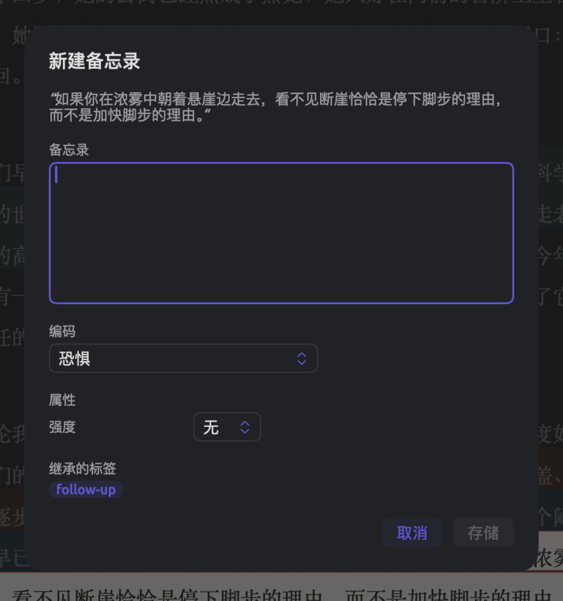
如果编码有属性，会出现属性字段，每个属性各有一个控件。
编码下拉菜单列出本文档中可以使用的编码。选择无，已编码备忘录就会变回普通备忘录。
阅读器中的备忘录
备忘录所针对的文字以黄色标示，已编码备忘录的文字则采用其编码的颜色和格式。页边栏中，这段文字开头处的标注显示备忘录的开头几个词，将鼠标指针悬停在标注上可以看到备忘录的全部内容。点按标注即可选中这段文字。
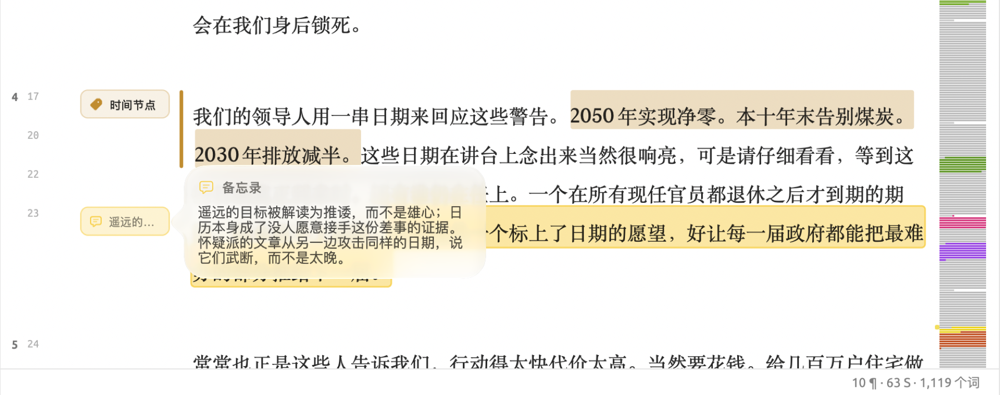
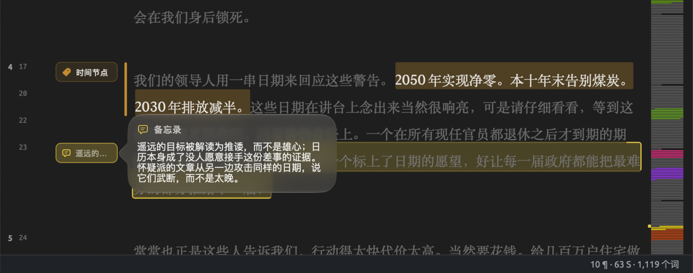
无论透镜是否启用，备忘录都会显示；即使停用了编码透镜，已编码备忘录也仍然可见。
阅读、编辑和删除备忘录
当前文档的备忘录显示在检查器的编码实例分面中。在顶部的切换控件中切换到备忘录即可。
每条备忘录占一行，显示备忘录图标（形如对话气泡）、编码名称（仅限已编码备忘录）、所针对段落的位置、备忘录的第一行文字及其标签。已编码备忘录的图标是实心的，颜色与其编码相同。点按一行，阅读器会滚动到这段文字，这一行同时展开，显示最多六行文字、备忘录的属性值、编辑按钮和删除按钮。右键点按一行会打开快捷菜单，其中有编辑、跳转到来源和删除。
搜索在备忘录本身的文字及其标签中查找。筛选按钮（按编码筛选）可以按编码筛选备忘录。导出按钮把显示的各行导出为 CSV 文件，其中各列为编码、位置、文本（所针对的段落本身）、备忘录和标签。
编辑按钮会打开编辑备忘录对话框，它的字段与新建备忘录完全相同，左下角另有一个删除按钮。
“备忘录”视图
项目视图栏的备忘录视图以表格形式显示你的备忘录。可以显示整个项目的备忘录，也可以只显示某个文档集中文档的备忘录。表格有文档、编码和备忘录三列。左上角显示当前列出的行数，例如“行动派”文档集显示2 条备忘录。
- 搜索按文字、文档标题、编码名称或标签查找备忘录。
- 选中一行，表格下方会打开一个窗格，显示备忘录全文、它的标签和属性值，并有编辑和跳转到来源两个按钮，分别用于编辑备忘录和跳转到添加这条备忘录的来源文档。拖移表格和窗格之间的分隔线，可以给其中一方更多空间。
- 连按一行，或者选取跳转到来源，也会打开文档并定位到所选备忘录的位置。
- 右键点按一行，可以选取编辑、跳转到来源和删除。
- 导出按钮把当前显示的各行导出为 CSV 文件。
关于文档、编码和项目的备忘录
在 LemmaLoom 中，备忘录直接附在段落上。不过，从支持 REFI-QDA 标准的软件导入项目时，附在整个文档、编码以及项目本身上的备忘录也可能一并导入（见第 22 章“交换与导出”中的导入 REFI-QDA 项目）。
文档备忘录位于这个文档的编码实例分面中的备忘录下。它们也列在项目的备忘录视图中，以及包含这个文档的任何文档集的备忘录视图中。
编码备忘录和项目备忘录只出现在项目的备忘录视图中，它们的文档列显示无标题。关于同一个编码的所有笔记，最终会在备忘录视图中合并为一条备忘录。项目本身也有一条描述其内容的备忘录。
导入的项目中附在链接上的笔记，会成为这些链接的评论。
链接
链接表示两段文字之间的关系，例如回应、解释、矛盾、重复，或者任何你自己决定的关系。如果文本之间相互回应，或者你需要让论点与其证据保持紧密联系，链接就很有用。“气候辩论”中有五个链接。“不必恐慌”中有一个链接以“相矛盾”的关系指向“时间不多了”，因为两个文档都承认没有人知道气候系统的阈值在哪里，却由此得出了不同的结论。项目中还有一个从“电台辩论”指向“2024 热浪报告”的“支持”链接，因为主持人引用了后者中的一个统计数字。
链接两段文字
插图显示的是正在两段摘录之间新建的另一个链接。在“气候辩论”中，“时间不多了”和“净零代价高昂”都不信任目标日期，但两位作者的理由截然不同。“时间不多了”把遥远的期限称为“一个标上了日期的愿望”。相比之下，“净零代价高昂”把一个目标年份称为“政治决定，而不是工程决定”。这个链接从第一段摘录指向第二段，关系为“形成对照”，可以让你从一段摘录直接跳到另一段。
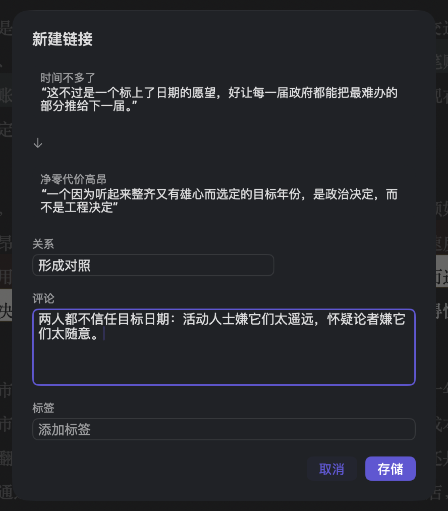
要链接两段文字：
- 选中第一段文字。
- 点按选区栏中的链接，或者按下 ⇧⌘L。LemmaLoom 会把这段文字记为链接的起点。
- 选中第二段文字，它可以在同一个文档中，也可以在另一个文档中。在文档之间切换时，链接的起点会一直保留。
- 点按选区栏中的完成链接，或者再次按下 ⇧⌘L。
- 新建链接对话框显示起点所在的文档和文字，箭头下方是终点的文字。在关系中输入关系。
- 填写评论和标签，或者留空，然后点按存储。
链接是有方向的，从起点的段落指向终点的段落，关系也按这个方向理解。如果创建时没有填写其他关系，链接的关系默认为关联于。请选用你预计会经常重复使用的关系（例如“相矛盾”“解释”“举例”），这样以后就很容易按这些关系查找链接。
链接的起点和终点必须位于同一个项目中，两者也可以位于同一个文档中。
在新建链接对话框中点按取消，链接的起点仍会保留，你可以从这里另建一个指向项目中其他位置的链接。
要在完成之前取消链接，请选取文档 ▸ 取消链接（⌥⇧⌘L）；或者在任意位置选中一段文字，然后点按完成链接按钮旁边的取消待定链接（带斜线的链接图标）。
沿链接跳转
每个链接的两端在页边栏中各有一个标注。标注以强调色显示，写有两段文字之间的关系。将鼠标指针悬停在标注上，可以看到链接的信息，包括两段文字之间的关系、另一个文档（或在此文档中）、另一端的文字本身，以及链接的评论。点按标注，或者点按弹出窗口中的跳转到另一端，即可跳到链接的另一端。如果另一端在另一个文档中，跳转时会打开那个文档，它显示在单独的标签页中。
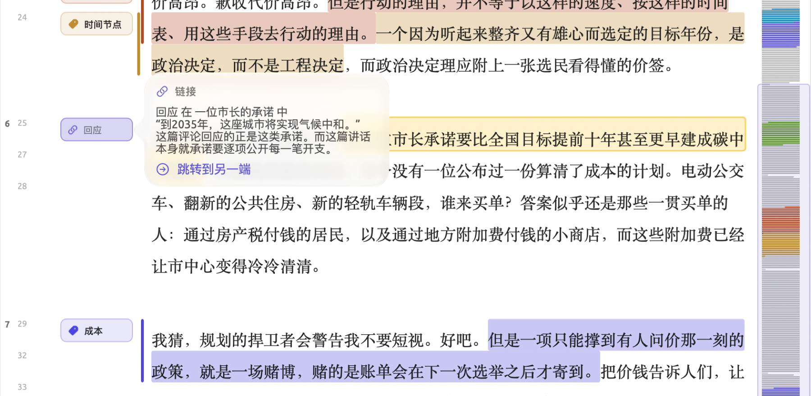

链接分面位于检查器的编码标签页中。它列出有一端在当前文档中的所有链接，标题类似链接 (3)。标题右侧的导出把完整的链接列表导出为 CSV 文件。列表由条目组成，每个条目显示起点、标有关系的链接箭头和终点，下方是链接的评论和标签。位于当前文档中的一端显示它在文本中的位置，位于另一个文档中的一端则显示那个文档的标题。点按某一端旁边的箭头按钮（跳转到此端或在另一个文档中打开），即可跳到这一端；点按当前文档中的一端会跳到那里，连按另一个文档中的一端则会打开它。
编辑和删除链接
在链接分面中，右键点按链接，然后选取编辑或删除。同样，在项目视图栏的链接视图中，右键点按链接，然后选取编辑或删除链接。
在编辑链接对话框中，可以更改链接的关系、评论和标签。如果要把链接连到另一段文字上，需要删除现有的链接，再新建一个。
“链接”视图
在项目视图栏的链接视图中，可以查看项目中的所有链接，或者至少有一端在某个文档集的文档中的链接。显示的链接总数位于左上角。链接视图中的搜索（位于顶部横栏右侧）可以按链接涉及的段落、关系、评论、标签或文档标题进行筛选。插图显示项目“气候辩论”的五个链接，关系有“支持”“相矛盾”和“回应”。
每个链接占一行，显示起点文档和终点文档，中间以箭头相连。接着是关系和两段文字（终点的文字颜色较浅）。链接的标签排在最后，位于两段文字下方。点按文档标题即可直接跳到那一端。连按一行，或者选中一行后按下 Return 键，会跳到链接的起点。右键点按任意一行，可以选取编辑、打开源端（起点）、打开目标端（终点）和删除链接。
复制到译文中的链接，在列表中只出现一次。导出可以把列表存储为 CSV 文件，其中各列为源文档、源文本、关系、目标文档、目标文本、评论和标签。没有可导出的链接时，导出按钮不可用，将鼠标指针悬停在上面会显示没有可导出的内容。
书签
书签标记你以后可能需要再找到的段落，例如准备在论文中引用的话，或者你上次编码停下的位置。“气候辩论”项目中有四个文档带有书签，每个书签都附有评论。例如，“不必恐慌”在“至少有些事情，是有定论的。”上有一个书签，评论为“带反讽意味的结束语”。
要在 LemmaLoom 中为段落加书签：
- 选中这段文字。
- 点按选区栏中的书签，或者按下 ⇧⌘B。
- 在新建书签对话框中，在评论（可选）中输入一段说明，并在颜色下点按一种颜色。书签提供无颜色和编码所用的八个色块。
- 点按存储。
启用书签透镜时（每次打开文档时默认启用），段落会以书签的颜色高亮；没有颜色的书签以黄色高亮。页边栏中这段文字旁边有一个显示评论的标注，文档概览的左边缘则有一个小方块，标出书签所在的位置。
所选内容与某个书签重叠时，选区栏上的书签会变为移除书签。按下 ⇧⌘B，书签会立即消失；你可以用菜单项编辑 ▸ 撤销移除书签（⌘Z）把它恢复。
某个文档的书签列表位于检查器文本标签页的书签下（见第 10 章“文本检查器”中的书签分面）。每一行显示一个与书签同色的书签图标、评论（没有评论时显示这段文字）以及位置。点按任意一行，即可在阅读器中跳到这段文字；右键点按则可以选取编辑（打开带有删除按钮的编辑书签对话框）和删除。搜索按评论或文字查找书签。要把书签导出为 CSV 文件（各列为位置、文本和评论），请点按导出按钮。
如果想为查询的所有命中添加书签，可以使用查询操作菜单中的为命中添加书签…（见第 18 章“使用查询结果”中的为命中添加书签）。要同时查看多个文档的书签，可以构建一个列出书签的查询。单位备忘录、链接和编码实例也有类似的功能（见第 15 章“构建查询”中的选择要查找的内容）。
自动为段落编码
自动编码借助透镜找到标注，然后在一次运行中为这些标注标出的所有段落编码。凡是可以按措辞或语法模式搜索到的内容，都适合用自动编码，包括词典中的模糊限制语和已存储查询的结果。请把一次运行看作初步的编码（见本章后文的示例）。
在各种透镜中，只有你自己建立的透镜才能用于自动编码：
- 由词典生成的透镜，词典是你自己收集的词和短语（见第 19 章“词典”）；
- 由存储为透镜的查询得到的透镜（见第 18 章“使用查询结果”中的把查询存储为透镜）；
- 以及自定义分析器提供的透镜（见第 20 章“自定义分析器”）。
此外，你也可以在检查器中直接为查询返回的段落自动编码。
从透镜自动编码
在“气候辩论”中，词典“模糊限制语”在每个文档中都可以作为透镜使用。词典的每个类别都是透镜的一个标注项，在图例中各有一个图例项，即“近似语”和“缓和语”。
要从透镜自动编码：
- 打开文档，在阅读器顶部的透镜菜单中启用这个透镜。文档建立索引之前，这个菜单不可用。
- 选取文档 ▸ 自动编码…（⇧⌘A）。透镜菜单中也有这一项，就在清除标注上方。如果启用了不止一个这类透镜，每个透镜各有一项，以透镜命名，例如使用模糊限制语自动编码…，⇧⌘A 选取其中第一项。
- 在自动编码对话框中，按照下文“自动编码”对话框中的说明设置这次运行，然后点按自动编码。
从查询自动编码
“气候辩论”项目中有一个已存储的查询“紧迫性话题”，它没有定义任何类别。这个查询的自动编码对话框中只有一行，名为“紧迫性话题”。对于这一行，如果你想让 LemmaLoom 用“紧迫性”为段落自动编码，就选择“紧迫性”；也可以保留新建编码：紧迫性话题。
要根据查询自动编码：
- 打开一个文档。在检查器中点按多重模式，然后点按查询。
- 构建查询，或者载入一个已存储的查询。
- 打开操作菜单（带圆圈的 ⋯），选取自动编码…。
- 在自动编码对话框中设置这次运行，然后点按自动编码。
无论查询是否已经存储，对话框使用的都是查询构建器中当前定义的查询。如果查询无法标注段落，例如它查找的是文档或编码而不是段落，或者显示没有设为列表，自动编码…这一项就会不可用。将鼠标指针悬停在这一项上，可以看到它不可用的具体原因。关于哪些查询可以成为透镜的完整说明，请参阅第 18 章“使用查询结果”中的哪些查询可以成为透镜。

“自动编码”对话框
如下图所示，“模型总是失准”中透镜“模糊限制语”的对话框有两行，词典的每个类别各占一行。
第一行是透镜或查询，写明提供段落的透镜或查询的名称。
在编码下，透镜图例中的每个图例项各占一行，一开始都处于勾选状态。对词典来说，每个类别一行；对查询来说，有类别时每个类别一行，没有类别时只有一行，以查询命名；对分析器来说，图例中的每一项一行。只有图例中已启用的图例项才会在这里有对应的行。停用某个图例项，它就没有自己的行，因而在这次运行中被跳过（见第 6 章“透镜”中的选择启用哪些标注项）。
在每一行右侧显示新建编码：…的菜单中选择一个现有编码，就把这个编码指定给这一行；如果没有选择现有编码，这一行就使用新建编码：…，创建一个与这一行同名、同色的编码。如果有编码的名称与这一行相同（不区分大小写和重音符号），菜单会预先选中它。菜单列出当前文档中可以使用的所有编码。取消勾选某一行，运行时就会忽略这一行。
在文档菜单中，可以选择此文档、项目中的任意文档集或整个项目。选择此文档时，你可以看到这个透镜在文档中为勾选的各行找到了多少段文字（片段）。已经带有所选编码的段落也计入这个数字，但运行时会被跳过。
正在载入段落时（正在加载），或者没有勾选任何一行时（未选择任何内容），自动编码不可用。
点按自动编码即开始运行。对话框保持打开，所有设置都会锁定；因此，要用新的设置再运行一次，需要重新选取自动编码…。运行期间，自动编码按钮变为停止。
- 进度显示已完成的文档数，例如3 / 5。
- 点按停止会在当前文档编码完成后结束运行。此前的编码实例全部保留。
- 运行结束后，进度显示已添加编码实例：和数量。自动编码按钮变为完成，点按它即可关闭对话框。
自动编码的规则
- 如果一段文字已在完全相同的范围内带有所选编码，就会被跳过（也就是说，第二次运行会跳过第一次运行编码过的段落）。不过，如果所选编码的现有编码实例只是与这段文字重叠，例如这段文字位于一个整段都带有这个编码的段落之中，它仍会被编码。
- 在文档集或整个项目上运行时，每个原文文档依次得到处理，就像你在应用中打开了它一样；如果你是从某个文档的译文（例如“时间不多了 (英语)”）开始运行的，自动编码就会处理这份译文，而不是“时间不多了”。
- 基于词典的透镜直接处理文本，所以也会为尚未建立索引的文档编码。基于分析器的透镜则只为已建立索引且语言受该分析器支持的文档编码；此外，如果你在某个文档中取消勾选了这个分析器，这个文档会被跳过。
- 各行来自打开的文档。如果查询透镜按着色依据为结果着色（见第 15 章“构建查询”中的类别与着色依据），只有在当前文档中出现的值才有对应的行，在其他所有文档中也只为这些值编码。
- 对于使用新编码的行，找到第一段文字时会在编码树的顶层创建这个新编码。它的适用范围为项目，格式为高亮，名称和颜色与这一行相同。
- 只属于单个文档或文档集的现有编码，只在那个文档或文档集中应用。
- 自动编码创建的编码实例不带属性值，即使编码有属性也是如此。
- 与手动编码一样，新建的编码实例也会添加到文档的译文中。
- 整次运行在撤销历史中算作一步，所以编辑 ▸ 撤销自动编码（⌘Z）会清除这次运行添加的每个编码实例和创建的每个编码，包括你点按停止之前创建的那些。
示例
词典“模糊限制语”有两个类别，即包括大约、左右和大致等词条的“近似语”，以及包括我觉得、也许和或许等词条的“缓和语”。怀疑派文档使用模糊限制语的频率远高于行动派文档；因此，为“怀疑派”文档集中的模糊限制语编码，可以让它们与你现有的编码一起出现在编码表格中。
在“模型总是失准”中启用“模糊限制语”后，文档 ▸ 自动编码…会打开上图所示的对话框。近似语和缓和语两行提供新建编码：近似语和新建编码：缓和语，因为项目中还没有这两个名称的编码。选择此文档时，片段显示共 7 段，即在“模型总是失准”中找到的 2 个近似语和 5 个缓和语。取消勾选“缓和语”后，数字降为 2。
勾选两行并把文档改为怀疑派后，进度会依次计数这个文档集中的五个文档，最后停在已添加编码实例：38。其中 7 个在“模型总是失准”中，31 个在其他文档中。此后，编码本中多了两个新的顶层编码“近似语”和“缓和语”，颜色与词典中的类别相同。在包含“时间不多了”的文档集上运行时，“时间不多了 (英语)”会得到这些编码实例的副本，而已添加编码实例：只统计原文中的编码实例。
再次打开对话框时，由于名称相同，“近似语”和“缓和语”会被默认选中。再运行一次后，进度显示已添加编码实例：0，表示没有需要另外编码的段落。如果在第一次运行之后立即选取编辑 ▸ 撤销自动编码，就会删除这一整批 38 个编码实例和相应的两个编码。
每个匹配项都会被编码，不论是否准确。在“模型总是失准”中，“近似语”词条大约出现在“大约十二年前”里，这里它确实是模糊限制语。“科学从无定论”中的“在公开场合说一句‘我说不准’”含有“缓和语”词条说不准，所以同样会被编码，但作者在这里只是提到这句话，并没有为自己的说法留余地。请仔细通读已编码的段落，在编码实例分面或编码实例视图中删除不正确的编码实例。
撤销编码操作
对编码、编码实例、备忘录、链接或书签所做的任何更改，都可以用编辑 ▸ 撤销（⌘Z）撤销，已撤销的操作可以用编辑 ▸ 重做（⇧⌘Z）重做。菜单中会写出将要撤销或重做的操作名称：
| 操作 | 菜单项 |
|---|---|
| 创建、编辑或移动编码 | 撤销新建编码、撤销编辑编码、撤销移动编码 |
| 合并或删除编码 | 撤销合并、撤销删除编码 |
| 创建、重命名、填充或删除编码集 | 撤销新建编码集、撤销重命名、撤销添加到编码集、撤销从编码集中移除、撤销删除编码集 |
| 应用、更改或移除编码 | 撤销应用编码、撤销更改编码、撤销删除编码实例 |
| 更改编码实例的属性值 | 撤销设置值 |
| 自动编码 | 撤销自动编码 |
| 备忘录 | 撤销新建备忘录、撤销编辑备忘录、撤销删除备忘录 |
| 链接 | 撤销新建链接、撤销编辑链接、撤销删除链接 |
| 书签 | 撤销书签、撤销编辑书签、撤销移除书签 |
关于撤销历史如何在窗口之间运作以及何时会被清空，请参阅第 23 章“撤销与重做”。